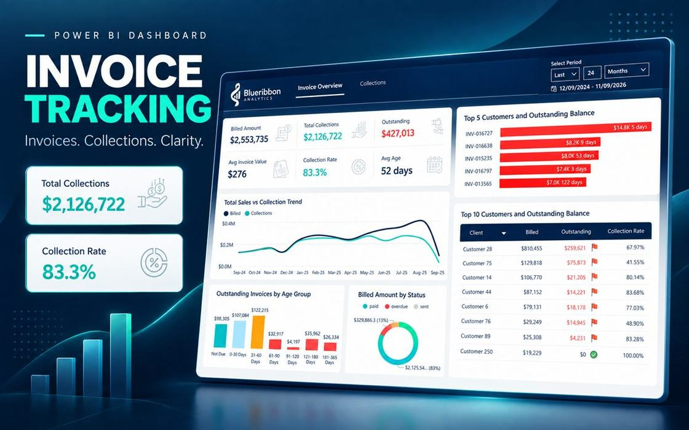

From checking the accounting system manually to knowing what is outstanding

A cardiac clinic in Panama needed a reliable way to see outstanding invoices without repeatedly logging into its accounting software and piecing the answer together. I connected the reporting directly to the accounting source and built a live view of outstanding balances and aging. The system answers what is outstanding, where attention is needed, and which invoices are driving the issue.
Figures in the live report are randomized for client privacy. View live report